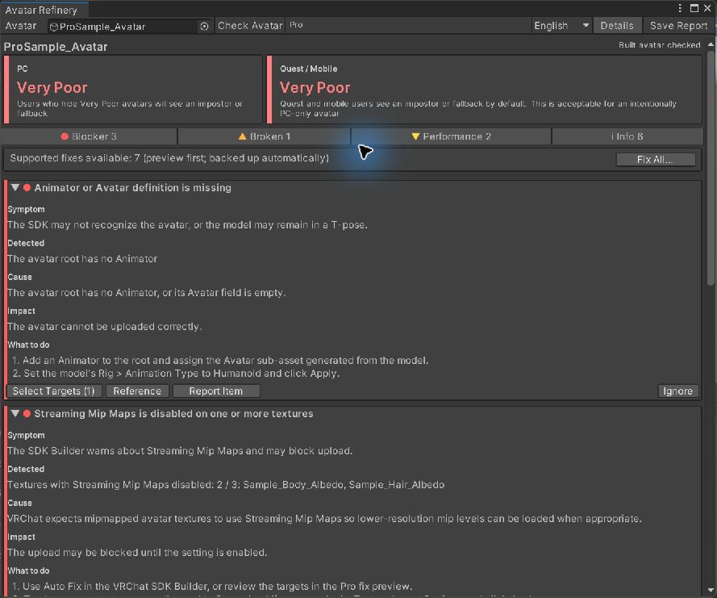
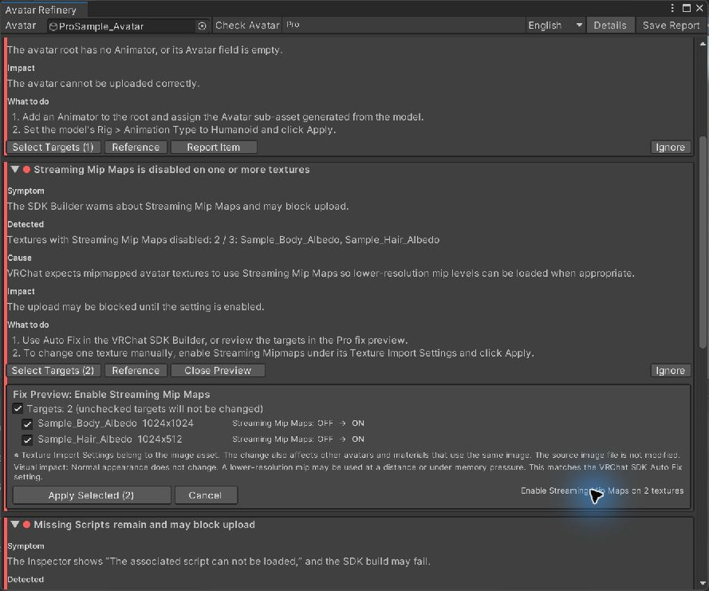
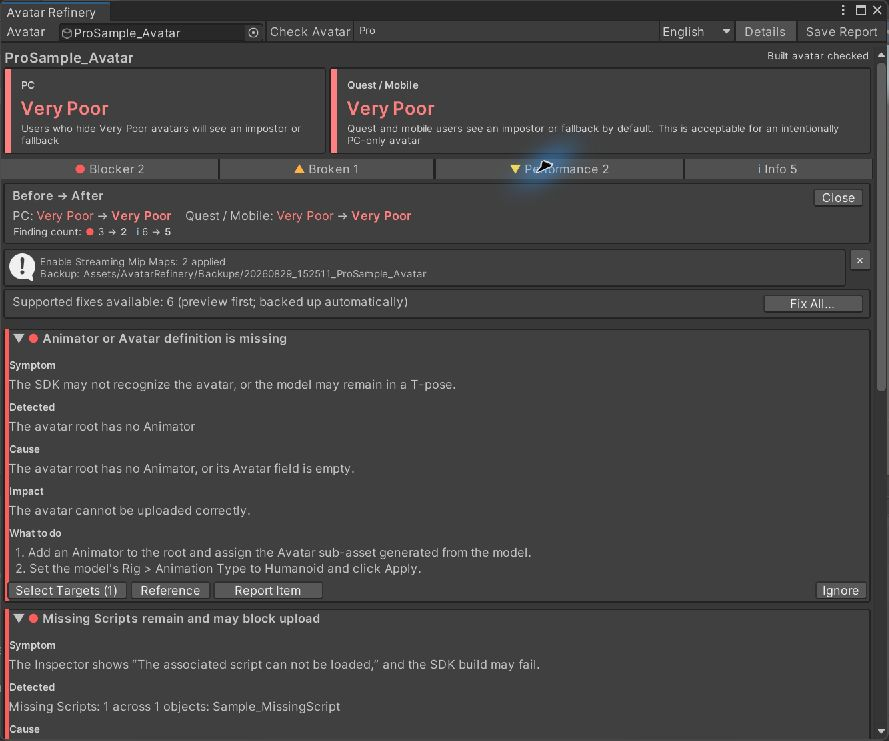

What this warning means
A texture used by your avatar has mipmaps but is not configured for mipmap streaming. Unity exposes this as a texture import setting. Depending on your project and SDK checks, you may see a warning or upload-related message. It does not mean the avatar is otherwise Quest-ready.
Texture import settings can affect every object using the same texture asset. Before changing a shared texture, check where else it is used and keep a project backup.
Fix it manually in Unity
- In your avatar project, identify the texture named by the VRChat SDK Builder warning or by a read-only Avatar Refinery Lite check.
- Select that texture asset in Unity’s Project window. In the Inspector, look at its Texture Import Settings. If needed, expand the advanced settings.
- For an applicable 3D texture with generated mipmaps, enable Streaming Mip Maps (shown as Mip Streaming in some Unity panels), then select Apply. If the option is unavailable, inspect the texture type and mipmap settings instead of changing unrelated settings blindly.
- Repeat for the affected textures. Run the SDK Builder check again and confirm that this specific warning has gone. Address any remaining blockers separately.
Unity’s Texture Import Settings manual and 2022.3 Streaming Mipmaps API reference describe the underlying setting.
What the guided workflow looks like
This test avatar had two affected textures. The images below are from an English-language Avatar Refinery Pro check, not a promise about every avatar.



What this fix does not do
Enabling Streaming Mip Maps is one import-setting change. It does not reduce polygon count, merge materials, convert shaders for mobile, or guarantee a better VRChat performance rank. VRChat determines the final rank; fix or investigate other findings on their own merits.
Choose your route
Free Lite: read-only diagnosis in English, affected-texture guidance, and a report. Pro: preview each supported change, apply selected texture settings with a backup, and compare before/after results. You do not need Pro to follow the manual steps above.
Get Avatar Refinery Lite freeSee Avatar Refinery Pro on Gumroad